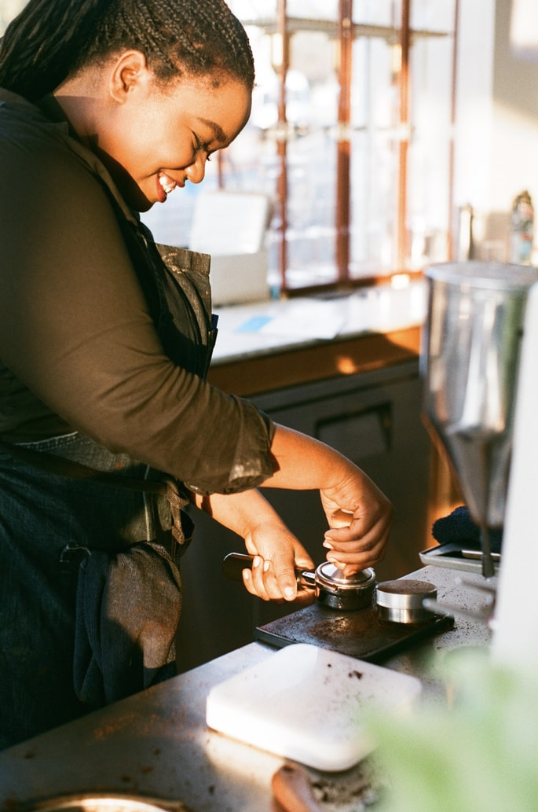
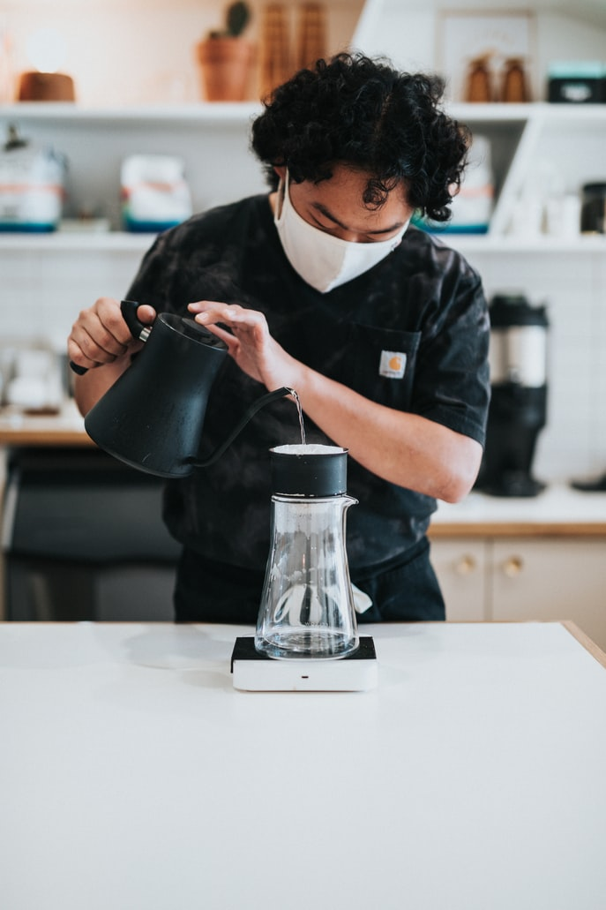

Hope Robinson, our coffee barista, is responsible for all our espresso and coffee based drinks. She joined the King's Street family two years ago and we're so happy to have her! Her go-to King's Street order is the cortado. Hope loves reading and writing poetry, exploring new restaurants, and yoga.

Joey, our non-coffee barista, makes all of our teas, non-coffee drinks, and speciality beverages. He's been with the King's Street family since the beginning! His go-to King's street order is the matcha latte. In his free time, he enjoys gaming, walking his dog, and visiting his sister in Chicago.
